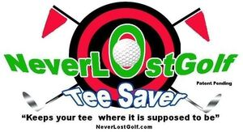

Trade Mark Journal No.2025/046 14 November 2025
WO0000001883425 (28)
Office of origin: United States of America

The mark consists of a black and red bullseye formed from four concentric circles alternating black and red. Extending from top right and left sides of the bullseye are two black poles with red pennant flags at the end. In front of the bullseye are the terms "NEVERLOSTGOLF" in green and outlined in white across the bullseye. Within the "O" in the center of "LOST" is the stylized image of a golf ball in white. Below the term "GOLF" is the term "PATENT PENDING" in stylized black font. Centered below "NEVERLOSTGOLF" is the terms "TEE SAVER" in white with blue outline. Extending from the bottom right and left sides of the bullseye are stylized silver golf clubs. Below in stylized black font are the terms "KEEPS YOUR TEE WHERE IT IS SUPPOSED TO BE" and below that is "NEVERLOSTGOLF.COM" also in stylized black font.
Protection of this mark shall gives no exclusive right to use of the words"TEE", ".COM" and "PATENT PENDING".
The mark includes the colours red, black, green, white, blue, and silver
The mark consists of a black and red bullseye formed from four concentric circles alternating black and red. Extending from top right and left sides of the bullseye are two black poles with red pennant flags at the end. In front of the bullseye are the terms "NEVERLOSTGOLF" in green and outlined in white across the bullseye. Within the "O" in the center of "LOST" is the stylized image of a golf ball in white. Below the term "GOLF" is the term "PATENT PENDING" in stylized black font. Centered below "NEVERLOSTGOLF" is the terms "TEE SAVER" in white with blue outline. Extending from the bottom right and left sides of the bullseye are stylized silver golf clubs. Below in stylized black font are the terms "KEEPS YOUR TEE WHERE IT IS SUPPOSED TO BE" and below that is "NEVERLOSTGOLF.COM" also in stylized black font.
- Class 28
- Golf accessories, namely, holders specially adapted for holding golf ball markers; golf accessory pouches; golf accessory, namely, support for holding a golf club; golf bag covers; golf bag straps; golf bag tags; golf bag trolleys; golf bags; golf ball markers; golf ball sleeves; golf balls; golf club bags; golf club covers; golf club head covers; golf divot repair tools; golf flags; golf flagsticks; golf gloves; golf practice nets; golf putter covers; golf tee bags; golf tee markers; golf tees; golf towel clips for attachment to golf bags; golf training apparatus, namely, golf practice platforms; golf training equipment, namely, a golf training cage; covers for golf club heads; covers for golf clubs; driving practice mats; gloves for golf; head covers for golf clubs; putting practice mats.
NeverLostGolf